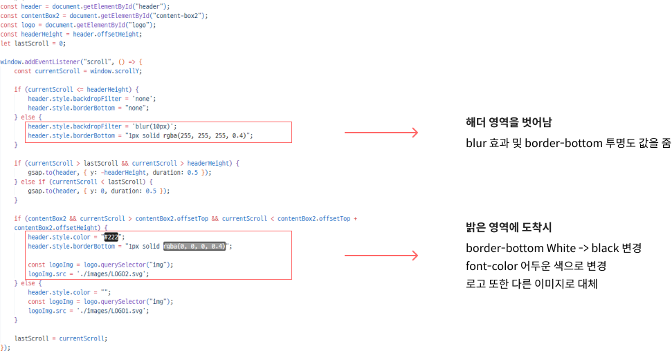

StudioDragon
리디자인 & 퍼블리싱
StudioDragon Responsive Web Redesign & Publishing
100% 개인작업


StudioDragon Responsive Web Redesign & Publishing
100% 개인작업
스튜디오드래곤은 창의적 스토리텔링과 고품질 콘텐츠 제작으로 글로벌 드라마 시장을 선도하는 한국의 제작사입니다
이를 통해 브랜드를 창의적으로 재해석하고, GSAP를 사용해 직관적이고 현대적인 디자인을
구현했습니다
다양한 디바이스에서 최적화된 경험을 제공하며, Studio Dragon의 핵심 가치를 강조했습니다

드래그 기능을 필요한 영역에만 표시하여 UI를 간결하고 직관적으로 제작
스크롤시 해당 영역에 따라 해더의 Nav 스타일이 변경 됨
• 스크립트 사용으로 스크롤에 따라 헤더 배경과 테두리를 동적으로 변경하고, 사용자가 내리면 헤더를 숨기며 올리면 다시 표시되도록 애니메이션을 적용,
특정 영역에 도달하면 로고와 헤더 색상을 변경하는 방식으로 사용자 경험을 향상
스크롤을 하며 화면의 영역이 변경 될 때 사용자에게 스크롤시 화면이 변환된다는 시각적 효과를 줌
• start와 end로 애니메이션이 시작하고 끝나는 스크롤 위치를 설정
• scrub: 0.2는 스크롤에 따라 애니메이션의 속도를 부드럽게 조정
• ease: "power4.out"는 애니메이션의 끝을 부드럽게 만드는 이징 함수 사용
•borderRadius로 둥글게 변화는 효과를 줌
• css로 z-index값으로 순서를 주어 컨텐츠가 올라오면서 영역을 가리는 효과를 제거

원형 모양의 컨텐츠가 정해진 영역에서 사라져야 하는 효과를 줘야 했기에 css hover 효과가 아닌 스크립트를 사용
• 요소를 2개를 만들어 CSS사용 및 absolute를 사용하여 두개를 미리 합쳐 놓음
• 요소 2개를 묶을 수 있는 부모요소를 만들어 놓고 컨텐츠의 크기와 똑같이 만듦
• 스크립트를 통해 사용자가 해당 영역에 마우스를 올리면 위에 있떤 요소가 오른쪽으로 이동하고, 마우스를 떼면 원위치로 돌아오도록 함
드라마 제작사 관련 프로젝트를 진행하면서 내가 좋아하는 드라마들과 관련된 디자인을 하게 되어 질리지 않고 재미있게 작업할 수 있었습니다.
인물이 많이 들어간 프로젝트를
처음했는데 그로인해 디자인과 제작사 포스터들이 페이지에 흥미를 더해 몰입할 수 있었습니다.
처음으로 GSAP를 사용해 페이지 제작을 해야 한다고 생각 했을 때는 막막하다는 생각이들었지만 막상 GSAP를 사용해보니,
스크립트만으로 작업하는 것보다 GSAP를 활용한다면
쉽고 재미있게 다양한 효과를 추가할 수 있다는 점을 느꼈습니다.
이번 프로젝트를 통해서 스크립트와 GSAP를 활용하며 다양한 시각적 효과를 구현할 수 있다는 점을 알게 되었고,
이를 통해 더 다양한 사용자 경험을 제공하고 싶다는 생각을 하게
되었습니다